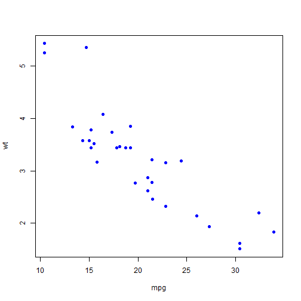

Car Afficianado's MPG Analyzer
The quest to build the most fuel efficient car
Ken Kaufman CEO, Car Afficianado
The quest to build the most fuel efficient car
Ken Kaufman CEO, Car Afficianado
With ever increasing fuel efficiency standards, automobile designers are looking for innovative ways to build more fuel efficient cars.
Car Afficanado has developed an application to help the engineers build the most efficient car. The application will help analyze variables that contribute greatly to fuel efficiency. In addition, the engineer can input variables and instantly see the predicted MPG.
The variables explored in this application include:
data(mtcars)
names(mtcars)
## [1] "mpg" "cyl" "disp" "hp" "drat" "wt" "qsec" "vs" "am" "gear"
## [11] "carb"
plot(mtcars$mpg, mtcars$wt, pch = 16, col="blue", xlab="mpg", ylab="wt")

A prediction model has been built to deliver 90+% accuracy. It allows the engineer to alter a variety of highly impactful variables and see the impacts to MPG instantly.